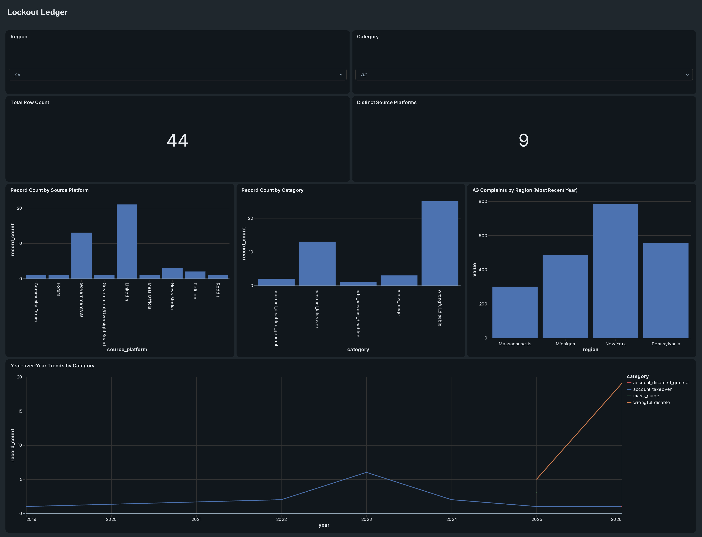

A cross-platform record of real complaints about Meta disabling Facebook and Instagram accounts, 2019–2026 — pulled from state attorney general filings, news investigations, a public petition, and 21 firsthand LinkedIn posts, and categorized by where each signal originated.
Every logged record, grouped by where it came from. LinkedIn carries the most volume — not because it's the loudest venue for this topic, but because it was the only source reachable by a signed-in search rather than a public API.
The same 44 records, grouped by category instead of source. Wrongful, unexplained disabling dominates — account takeover (hacked accounts) is the next largest, and is a distinct problem with a distinct cause.
The only hard numbers in this dataset — official counts logged with four state AG offices. Where a prior year is on record, the increase is shown below each bar.
Three sources, three different framings of the same underlying issue.
Business-first. Posts read as warnings to other founders: check your admin permissions, diversify off the platform, don't be the sole account owner.
“A founder who was sole Business Manager admin lost access with 80% of revenue on Meta.”
Accountability-first. Coverage centers on Meta's lack of a human appeals process and the false-allegation pattern behind many disablings.
“They said they couldn't tell me due to privacy and security reasons — it's my account.”
Volume-first. State attorneys general track raw complaint counts and year-over-year growth rather than individual stories.
“We refuse to operate as the customer service representatives of your company.”
Research compiled here, then loaded into Databricks for the analysis layer.
